峰生水起精读班面相整理*
苏民峰
据一份详细的笔记整理，无意侵权，仅作分享
学面相后会更清楚自己的优点和缺点， 日后要好好发挥优点，而缺点就不要逃避，要努力改善！
谨记
面型
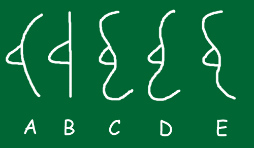
从侧面看额和下巴比从正面看面形更容易看到一个人的性格。
| 额 | 凸：思想慢 | 斜：思想快 |
| 下巴 | 凸：行动慢 | 缩：行动快 |
A. 凸面形
额向后斜，代表思想快；下巴向后退缩，行动迅速，为人冲动，容易撞板。
B. 直面形
额和下巴皆平坦，没有凸或退缩，代表思想行动一致，不太急、也不太慢。
C. 凹面形
月亮面，额凸、下巴凸，思想慢、行动又慢，为人老谋深算、城府极深，要小心。
(我认识一个月亮面的人，她思想好慢，每事都思前想后，而且喜欢盘算人，甚为恐怖；
她行动亦好慢，不是指她手脚慢，是要她搵工，几个月都无行动。 )
D. 额斜下巴凸
这是最常见的面形，思想快、行动慢，有什么计划慢慢实行。
E. 额凸下巴退缩
思想慢、行动快，做事未经深思熟虑，经常撞板。
而智力有问题的人下巴大多退缩。
A. 凸面形
额向后斜，代表思想快；下巴向后退缩，行动迅速，为人冲动，容易撞板。
B. 直面形
额和下巴皆平坦，没有凸或退缩，代表思想行动一致，不太急、也不太慢。
C. 凹面形
月亮面，额凸、下巴凸，思想慢、行动又慢，为人老谋深算、城府极深，要小心。
(我认识一个月亮面的人，她思想好慢，每事都思前想后，而且喜欢盘算人，甚为恐怖；
她行动亦好慢，不是指她手脚慢，是要她搵工，几个月都无行动。 )
D. 额斜下巴凸
这是最常见的面形，思想快、行动慢，有什么计划慢慢实行。
E. 额凸下巴退缩
思想慢、行动快，做事未经深思熟虑，经常撞板。
而智力有问题的人下巴大多退缩。
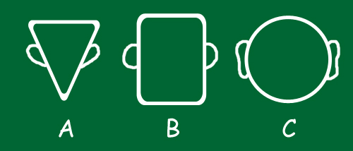
A. 思想形
额广阔，下巴尖削，这种人善于思想，但欠缺实际行动。
有高深的思想，适宜做策划等工作，例如科学家、设计师、艺术家、演艺工作者。
但如果流于空想，晚年容易潦倒，两餐欠温饱。
瘦人最重要看眼睛和鼻，鼻长运气可到60岁，如眼神弱、鼻短更甚。 额看思想，下巴看享受和家庭，思想形的人不着重享受，又容易忽略家庭。
B. 运动形
上停看思想、中停看运动、下停看动力，腮骨显露，可以在逆境求存，凡事亲力亲为。
一般运动形的人上停比较窄，而且有三横纹，眉粗，眼带红筋，鼻梁高而有节。
鼻高代表有动力，有坚毅的心。形格好的能够做运动家，形格差的则多以劳力搵钱﹗
一般下停最靓，下停紧闭代表意志强盛。
C. 享受形
面圆，是三种形格中最富有的，因为重享受，所有会想尽方法去赚钱，可做大生意。
如面圆配额窄下巴，代表以个人为中心，为人较自私。
所有人都是混合形的，例如运动 + 享受，或享受为主而带点思想。
面字型
在宇宙间，万事不离阴阳五行的变化，相学亦不例外，面形长短阔窄都是与五行有关，在灵枢经里讲，归纳为木、火、土、金、水五种类形，而每一类形又根据五音的大小阴阳属性，以及左右上下等进一步，再分为五类，就成为廿五种类别；而在西洋面相中，则只有三种基本面形，再由三种混合出十种最经常见的面形，而用十个字形来代表。
| 甲字﹐等同思想形﹐思想快、头脑灵活﹐适宜做从事创作工作。 如配又高又长的鼻，中年发展好，甲字面多配上思想形的耳朵。 | 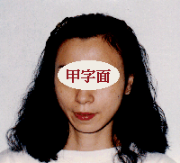 | 1 | |
| 由字﹐额窄下巴阔﹐代表欠缺高深思想﹐却注重个人物欲享受。 | 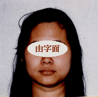 | 2 | |
| 田字﹐与同字相似，但较短而阔，性格和形格同样属土 (阴土)。 | 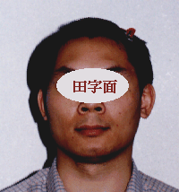 | 3 | |
| 申字﹐即鹅蛋面形﹐额尖下巴尖﹐中间有肉带点圆﹐多为俊男美女。若鼻太小﹐一生欠缺自信心；若鼻高﹐自尊心强﹐强硬﹐可望成功。 | 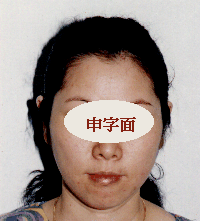 | 4 | |
| 圆字﹐等同享受形﹐多配鼻梁低而细小的鼻子。这种人交际手腕特别好﹐适宜做面对群众的工作﹐例如公关和演艺界。因为鼻梁代表自己﹐颧代表周围的人，鼻低配两颧高可以为令身边的人开心而不介意自己。圆字面的女人婚姻多不好﹐因为回到家没有群众﹐要比丈夫强悍，容易影响婚姻。 | 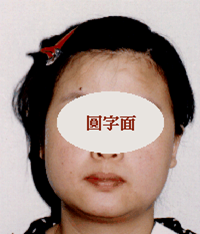 | 5 | |
| 同字﹐等如国字面去除四个角﹐面阔但腮骨不太阔。国字面等同运动形﹐而同字面即系运动形加享受形﹐三停平均﹐一生衣禄无忧。由于三停皆阔，为富贵之相。这最接近土形人 (阳土)﹐为有钱之贵相。 | 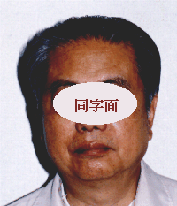 | 6 | |
| 目字﹐如人部促小﹐中年慢慢孤贫、财散人离。人部即鼻﹐所以目字形最重要是要鼻长﹐便一生容易有地位﹐贵大于富 | 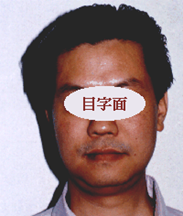 | 7 | |
| 用字﹐一边腮骨大，一边腮骨小，物质欲望不平衡。 | 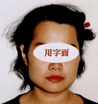 | 8 | |
| 风字﹐耳后见腮﹐秘密性强、破坏性强。 | 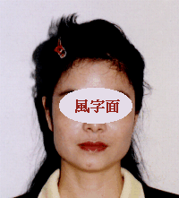 | 9 | |
| 王字﹐头顶凸﹐太阳穴凹﹐颧骨凸﹐面凹﹐腮骨凸 (例子：周吉)这种人特别吃得苦﹐能在恶劣环境生存﹐但命格比较辛苦﹐一生容易破财。 | 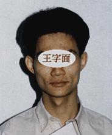 | 10 |
图
中央十四气势
1
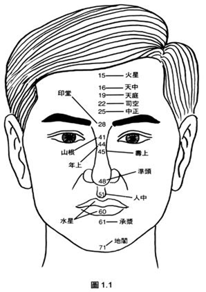
百岁流年图
5
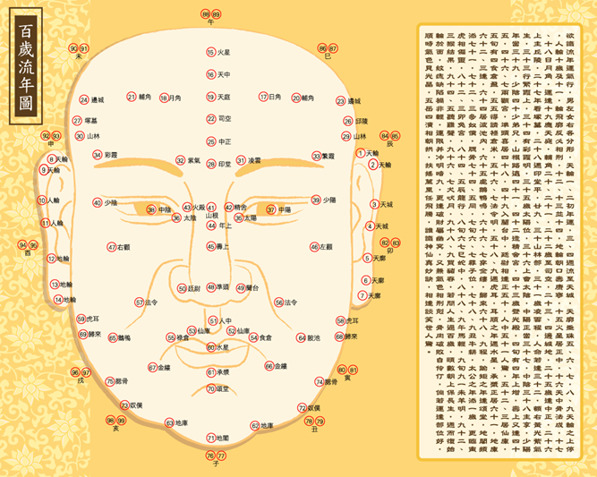
欲识流年运气行，男左女右各分形。
天轮一二初年运，三四周流至天城。
天廓垂珠五六七，八九天轮之上停。
人轮十岁及十一，轮飞廓反必相刑。
十二十三并十四，地轮朝口寿康宁。
十五火星居正额，十六天中骨格成。
十七十八日月角，运逢十九应天庭。
辅角二十二十一，二十二岁至司空。
二十三四边城地，二十五岁逢中正。
二十六上主丘陵，二十七年看冢墓。
二十八遇印堂平，廿九三十山林部。
三十一岁凌云程，人命若逢三十二。
额右黄光紫气生，三十三行繁霞上。
三十四有彩霞明，三十五岁太阳位。
三十六上会太阴，中阳正当三十七。
中阴三十八主亨，少阳年当三十九。
少阴四十少弟兄，山根路远四十一。
四十二造精舍宫，四十三岁登光殿。
四旬有四年上增，寿上又逢四十五。
四十六七两颧宫，准头喜居四十八。
四十九入兰台中，廷尉相逢正五十。
人中五十一人惊，五十二三居仙库。
五旬有四食仓盈，五五得请禄仓米。
五十六七法令明，五十八九遇虎耳。
耳顺之年遇水星，承浆正居六十一。
地库六十二三逢，六十四居陂池内。
六十五处鹅鸭呜，六十六七穿金缕。
归来六十八九程，逾矩之年逢颂堂。
地阁频添七十一，七十二三冠奴仆。
腮骨七十四五同，七旬六七寻子位。
七十八九丑牛耕，太公之年添一岁。
更临寅虎相偏灵，八十二三卯兔宫。
八十四五辰龙行，八旬六七巳蛇中。
八十八九午马轻，九旬九一未羊明。
九十二三猴结果，九十四五听鸡声。
九十六七犬吠月，九十八九买猪吞。
若问人生过百岁，顺数朝上保长生。
周而复始轮于面，纹痣缺陷祸非轻。
运限并冲明暗九，更逢破败属幽冥。
又兼气色相刑克，骨肉破败自伶仃。
倘若运逢部位好，顺时气色见光晶。
五岳四渎相朝拱，扶摇万里任飞腾。
谁识神仙真妙诀，相逢谈笑世人惊。
天庭欲起司空平，中正广阔印堂清，山根不断年寿润，准头圆肉人中深， 口如四字承浆阔，地馈朝归仓库应，山林圆满驿马丰，日月高广边地静， 阴阳肉满鱼尾长，正面颧开有神光，兰廷圆正法令通，金匮海角微生黄， 三阴三阳不枯陷，龙藏虎伏仍相当，五岳四渎无克破，便见人间可相郎， 若见欹斜并斜塌，气暗神昏受折磨，面有神光射人目，男贵公侯女贵后。
笔记
?
头发
- 鬈发难理且勾鼻：难相处
- 鬈发难理，粗鲁之辈
- 头发鬈曲：如果对象不能满足自己可能会偷情
- 粗：男人辛苦，女人克夫
- 婚姻中头发粗的一般会被迁就
- 发软如线：夫妻恩爱，做事会商量
- 头发幼：易接受别人的意见
- 头发枯黄：少年运势不好，女的不能靠老公
- 少年白发：靠不了父母
- 老年白发变黑：身体好但要照顾子女
- 头发洗了马上臭：男的工作劳碌，女的靠不了老公
- 发际线前有很多鬓毛：要么迟婚、要么离婚几次、要么是不正常婚姻（年龄差大或外国人）
- 开始秃顶：走霉运
- 前面开始秃：走好运
- 左右侧头发向内：早出来工作
- 头上两个发旋：难受教
- 黄毛额角旋：父母早不全
- 后面发角高：狠，相处时要小心
头
- 头皮宽（能抓起头皮）：性格宽容，做人开心
- 左右有角：执着，固执
- 头型突出：身体好，自尊心强
- 男头圆：富贵
- 女头圆：子女好
- 身大头小：蠢
- 身小头大：聪明
- 头尖额窄：没有贵格
- 头尖：自尊心强
- 太阳穴上的头凸：秘密性强，破坏性强
- 后枕骨圆：内里风光
- 头型扁平：表面风光，别人以为你很多钱，实际钱包空空
上庭
（30岁前）
- 额角参差：小时候就有生离死别，喜欢年长的男性，学业不顺，早年出来工作
- 日月角凹陷或破了：与父母无缘
- 印堂凹陷：悲观
- 印堂有痣：忧国忧民，为后世担心
- 印堂阔：豁达乐观，不执着，能适应周围环境，不常收拾房间
- 印堂窄：执着，小问题解决不了会不开心，会收拾房间
- 银针破印堂：40岁前易出现问题
- 印堂有竖线：结婚、发达、生子迟，与父无缘，少年出生贫穷
- 司空、中正（官禄宫）：凹陷不宜做官
- 中正凹：24、25岁感情变化，克兄弟
- 天庭饱满：家庭好，有贵人相助，运气好（抽奖易中）
- 官禄宫下陷：不受重用，不升职，建议异路功名
- 田宅宫越阔越重视家人
- 眉毛间竖痕：少年生活不如意，与父无缘，生活贫困
- 额有三道纹：向上→易海外扬名，横/向下→与父无缘
- 额头阔：重思想，家里有钱或走好运
- 额头低：分析能力不强，固执
- 额头窄：体力差，21-22岁走霉运
- 额角低且窄：固执，难接受意见，知识不足，少年运差
- 美人尖清晰：早恋，与父无缘，30岁前走运，之后要重头再起
- M型额头：分析力强
- 斜额：思考快，克妻
- 凸额：思考慢，记性好
- 圆额：能干，有地位，少年好，但靠不了男人，克夫，可能离婚
- 太阳穴饱胀：适合理财
- 太阳穴阔：年轻时零花钱多
鼻子
- 鼻子大：性欲强，精力旺盛，做事能干，做生意困难，自尊心强，强硬，易出轨，生殖能力强
- 鼻子小：表面无毒，背地里暗算人
- 鼻孔一大一小：逢赌必输
耳朵
（左1-7，右8-14）
- 耳下58、59饱胀：运势好
- 耳珠看晚年，耳珠大而厚：晚年有福气
- 没耳珠：喜欢与人争执
- 反廓：反叛心强，爱顶嘴，能言善辩，事事要争赢
- 尖耳朵加反廓：反叛心更强
- 耳孔大：能听得进别人的意见；耳孔小：反之
- 耳朵白：贵气，肾气足，记性好
- 耳朵白、大、硬、厚：很好
- 耳朵红：有财富或地位
- 耳朵软：肾气不足，心肠软，常常犹豫不决
Footnotes:
甲字面五行属木形 面形上大下尖，在西洋面相称为心性质，思想多、聪明、领悟力高、记忆力及智力强，善于捉机会，脑根转得快，理论重于实际，专长于研究，例如科学、法律、医学等，但自信心较弱，做事易变迁，遇有不顺利时容易灰心，不过这种面形的人有强力的适应能力，但于爱情方面比较吃亏，因他付出的爱多于被爱。 甲字面的人要配合，天庭广阔清多浊少、眉骨要高、耳朵要靓，方为有托，则少年运好，晚景亦隹；大忌额上泻入，则为破格。鼻要大但忌鼻梁起节，因为节为木，鼻为土星，名为木克土，会因此而暴起暴跌。上唇端厚，则寿长而聪颖，忌短缩，如咀似吹火，主婚姻不利，事业反复。 甲字面如五岳不配，则主父母缘薄及劳碌，自小离乡别井。职业宜从事律师、教授、艺术及研究等行业，但如心术不正，则会成为扭计师爷之类。
由字面五行属火形 面形为额窄下亭阔、发少、面色带红、是营养质的变形，又叫梨子脸；由于上亭窄，所以三十岁前运程相当反复，少年劳碌辛苦，三十岁后至晚年则越来越好。 由字面有圆字面的性格，物质欲望强，纵欲好色、好饮食、睹博、多言等，但实行力强说得出，做得到，凡事亲力亲为，因记忆力较差，所以做事，有点吊儿郎，不顾小节，行动噪急、聪明、学习力高，如眉长而黑，则对妻子与子女忠心，眉浓则友情重，因属火形所以脾气大，最好配甲字面形。 由字面要配合口大及耳大，否则如果耳大口细为短命相，难过三十岁，口细则会横死，耳薄则一生捱苦，鼻细则不聚财，印堂凹，唇薄则一生不快乐。由字面主祖业少，父母无助力，如不幸一早要离乡别井，但中年交眼运会渐入佳境，至晚年如水星位配合，则福禄全，子女佳，宜任武职，但富不能达万金，此乃苦尽甘来之命。
田字面五行属土形 面形短圆而带方，三停均圆，肌肉敦厚，浓眉大目，声音粗向，面带俗气，牙哨、鼻露、耳反为真土形，富贵之相，终身运佳；但性格急燥，有破坏的念头，实行能力强；不过作事会有头无尾，野心不大但不安份，婚姻不佳，没家庭观念。如骨露肉薄，声细步轻，五岳不足，则为破格，主终生劳碌之命。
申字面五行属木火形 面形上窄、中阔、下小，如鹅旦形面。申字面多有双重性格，有甲字及由字面之特性，十五岁至三十岁要自己创业，三十一岁至五十岁比较入佳境，但要有节制，为晚景早作安排，尤其四十一岁至四十三岁交接运特别小心，如无节制，则晚景会孤零。 申字面为比较人利己心重，是多计谋之师爷面型，对上司好拍马屁，对下属则好捉弄人，懒惰实行力弱，多纵欲于酒、色、赌等，对夫妻子女感情缘薄，外表和内心不同，会说假话。（对此面形之人，不能姑息养奸，如他有错时，则要直斥其非，于数次后，他便会怕你及敬你）。 申字面形忌 细、扁，主有不良嗜好，如烟酒、赌、色之类，申字面忌口大，口大则主容易坐牢。眉毛忌太粗，主计划难成。宜瘦，如肥则短命。宜眼凹，如凸则一生运气差
圆字面五行属水形 面圆体形肥胖，配合眼耳手脚均圆，在西洋面相属营养质，脂肪肥厚，发质细，面色为白里透红或黑色。欲望强喜欢饮食，年纪大者多为纵欲者，好酒、赌博、享受，是物质主义者；除欲望外，野心不大，容易满足，喜欢热闹，说话大声，做事没主意，懒隋，喜欢贪小便宜，做事平稳不急，是享受家不是实行家；女性贞操观念较薄弱，经不起诱惑。 圆字面要鼻大、眼大，则富甲一方；但忌口大，则为破格，会钱财多耗，口要适中。如面皮松，耳贴，眼眉疏．皮肤特黑或特白则主长命。如五岳明润，可得到福荫；如眼上有网形纹，眼肚松而下垂，则难过三十二岁。男性会有点女性化，女性则有点男性化。如皮滑肉冷者主子女少。
同字面五行属金形 面形较方，身体结实，在西洋面相属筋骨质，发坚硬．眉粗．脸色带白或白带黄，为人实干，慷慨大方，工作认真，有魄力，能不屈不挠，实行能力强，但计划力弱，主观强，处事当机立断责任心重，善于交友，容易在朋友中建立自己的声望，幻想不多，虽有计算能力，但不善理财，又不大孤寒，夫妻关系良好。同字面要有法令明显，耳要厚，下颚要凸出向上，咀要大，否则为破格。如眉疏散则事业难成，下颚短则早丧；面大而鼻细，运气不佳劳碌辛苦，婚姻不佳及恐防死于非命。
目字面五行属金木形 面形比同字面较窄，为筋骨质特点多，而营养质特点少，三停平均而带长，智力高、感情重，但经常有理智与感情冲突的烦恼，如下颚大则感情重于理智，实行力容 倾于感情方面。（上停代表智力，主思考力．推理力．综合力；中停代表实行力，主权力．实行力、野心、反抗力及冒险精神；下停代表情欲，主爱情、性欲）。目字面性格为人能勤力，能克苦耐劳，做事有一定的计划，但往往为注意一事而忽略很多小事，容易接受别人的意见，有时谦虚，但有时自以为能干，理财能力弱，又不善蓄财，乐于助人，但经常帮完人后被人笃背脊，劳而无功；对于此种面形之人要安抚他，他才可以尽心尽力与你卖命。 目字面形的人忌鼻孔昂起，颧骨一定要略圆而配合面形，面细则颧要细，如面细颧骨大则好自夸而无实际能力，容易起破坏念头，如面大颧骨细，主责任心不强，管人能力不足嗜好多，由于上、中、下三停平均及偏窄，所以运程平均，难成大业，但衣食不忧。
用字面五行属混合形 面形歪，一边腮骨凸，主性格反复不定，女性贞操观念差，婚姻不佳，男性则喜批评别人，一生辛苦，肯做肯挨苦，勤力悭 ；如五官端正，则为人乐于助人，对外人好过自己人；如五官不端正，则早年会离乡别井，反抗心极强。
风字面五行属混合形 面大而腮骨两边凸出，所谓耳后见腮，一般认为反骨形，为人实干刚直，精力足，工作能力强；风字面为人主观强，爱恶分明，但任性仇心重，有才能有学问喜出主意，组织力强，但不满意时，小心离职时便会破坏一切，心肠狠毒破坏能力甚大；喜戴高帽，爱情方面外表严肃，但内乱，女人则容易离婚，如前额纹多，主早年多辛苦。 风字面形的人，如五官端正而你能了解其人性格，在无利益冲突之中，亦可以交往，因其人刚直，如遇有困难虽其人帮助，他除非不答应，如果答应他会不惜一切去替你完成，是可信托之人。所谓脑后见腮，视为反骨，其实不一定，因主观强，任性报复心重，如无利益之争，亦不必可怕；运程一生反复，如收心种善，使下停饱满，晚景亦不差。
王字面五行属混合形 面形骨高，三骨 露，额骨，颧骨，腮骨，鼻骨直，满面皮紧包骨，为人极难与人相处，智力高， 但多用在坏方面，报复心极重，贪心、小气、自私、野心大，会不择手段损人利己、反抗心强、包顶颈，甚多不良嗜好，没有家庭责任心，女性克夫，婚姻不佳，一生劳苦，运气不安定，多死于非命，易有神经病，偶有机会成功亦不能保持很久，六亲无靠；虽五官端正，也是名利不能共全。